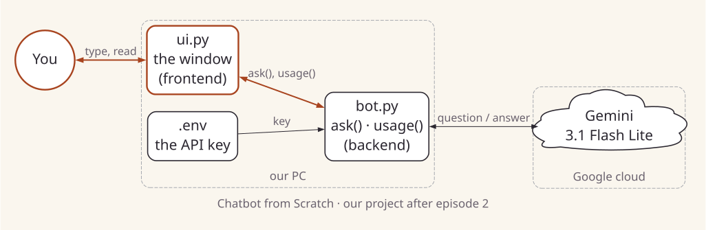
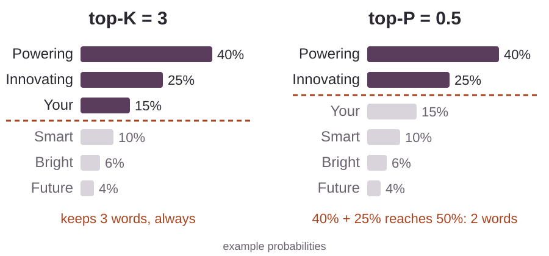

Prefer to watch? This chapter goes with Episode 3 (7:22). Open it on YouTube.
ui.py and its .venv. Antigravity, signed in: install Antigravity on Windows. And your own Gemini key in .env..env with GEMINI_API_KEY; the README shows the setup.Three answers to one question
Chapter 2 ended with a window, ui.py, that sends your question to Gemini through bot.py.

Type this into the window three times, word for word: Write a one-line slogan for my new electronics shop. Reply with the slogan only. Ours answered:
Powering your future, today.
Your world, powered by innovation.
Why does the same question give different answers?
How the next word is picked
A model writes its answer one word at a time. For each next word, it has a list of candidates, each with a probability. Then it picks one, a little like rolling a weighted die. A few settings decide how much that roll counts.
The probabilities in the top-K and top-P picture below are an example. Our model does not show its real ones. We asked, and the API said: "not enabled for this model".
Four settings
| Setting | What it changes | Low | High |
|---|---|---|---|
| Temperature | How creative the pick is | Nearly always the likeliest word | Less likely words get more room |
| Top-K | How many words stay in the list | Only the few likeliest | Many words |
| Top-P | How much probability stays in the list | Only the top words, until a small share | Almost every word |
| Max tokens | How long the answer may be | Cut short | Room for a full answer |
Top-K and top-P sound alike, and both cut the list before the pick. The difference is what they count.

On Gemini 3.1 Flash Lite, Google fixes top-K at 64. In our test, asking for top-K 1 still gave different slogans, so the setting is ignored. Top-P is the one you can turn.
Try it in Google AI Studio first
Open Google AI Studio and look at the run settings on the right.
- Gemini 3.1 Flash Lite shows no temperature and no top-P, only Output length. For this model, those two are set from our code. Set Output length to 20 and ask what a laptop's RAM does: the answer stops at "holding the data and".
- Gemma 4, Google's open model, does show the temperature slider. At 2, the slogan question gave three different slogans in one chat. At 0, two new chats both gave "Connecting you to the future."
Google advises keeping temperature at 1.0 on the Gemini 3 models; for 3.1 Flash Lite, AI Studio does not show it at all.
AI Studio vs our window
Why a new chat for each test at temperature 0? Because the two behave differently, and the test depends on it.
| Google AI Studio | Our window | |
|---|---|---|
| What it is | A full chat app | Our own small frontend |
| Sends with each question | The whole conversation so far | Only your latest question |
| Asking again in the same chat | Not the same input any more | The same input |
| A fair repeat test | Open a new chat | Just ask again |
Our window keeps no history at all. Remember that: it is why the bot forgets your name at the end of this chapter.
The settings prompt
Now bring the same settings into our own window. Make a new file, prompts/03-settings.txt. This time there is no sketch: a menu is easy to describe in words.
Task : Add a menu bar to the window with a Settings menu, with the same settings as Google AI Studio, so I can change how the bot picks its words Context : - Use the virtual environment .venv in this folder. Don't create a new one. - In bot.py, let ask() also take the settings: temperature, top_p and max_output_tokens. Keep the model and the thinking setting as they are. - Add a menu bar at the top of the window with one menu, Settings. - Settings > Temperature... opens a small dialog with a slider from 0 to 2, in steps of 0.1, starting at 1.0. - Settings > Top-P... opens a small dialog with a slider from 0 to 1, in steps of 0.05, starting at 0.95. - Settings > Max tokens... opens a small dialog with a slider from 10 to 2000, in steps of 10, starting at 2000. - Each dialog shows the slider's current value, an OK button and a Cancel button. - Settings > Top-K: 64 (fixed for this model) is shown greyed out, and top_k is left out of the call. - Settings > Reset to defaults puts every setting back where it started. - Under the menu bar, one small grey line always shows the current settings, for example: Temperature 1.0 · Top-P 0.95 · Max tokens 2000. - The grey line under each reply also shows the settings used, and "stopped: max tokens" when the answer was cut short. - Keep everything else in the window as it is: the chat, the token counter, the error messages and the colours. - The terminal chat in bot.py keeps working with the starting settings. Folder arch : - ui.py : the window (frontend) - bot.py : the chatbot (backend) - prompts/ : our prompts
The starting values match AI Studio's defaults, so Reset puts you back where Google recommends.
Review and implement prompts/03-settings.txt
It works for a while. Its summary lists the Settings menu, the status line and the grey line under each reply: 3 files changed. Click Accept all.
Turn the knobs
python ui.py
The window now has a Settings menu, with Top-K greyed out at 64. Ask the slogan question after each change.
Temperature 0
Settings › Temperature…, drag the slider to 0, OK. Three asks, one answer: "Powering your future, today."
Temperature 2
Drag it to the top. "Elevating your everyday through innovative technology." "Empowering your world, one gadget at a time." "Upgrade Your World." Different every time.
Top-P 0.1, still at temperature 2
Keep temperature at 2 and set Top-P… to 0.1. Only the top candidates are allowed, and the answer stays put: "Powering your future, today.", twice.
Max tokens 30
Set Max tokens… to 30 and ask what a laptop's RAM does, in two sentences. The answer stops mid-sentence, and the grey line says why: stopped: max tokens. Then Settings › Reset to defaults puts everything back: 1.0, 0.95, 2000.
Which setting when
| You want | Turn | On Gemini 3.1 Flash Lite |
|---|---|---|
| A good default | Nothing: Reset to defaults | Temperature 1.0, top-P 0.95 (Google's advice for Gemini 3) |
| The same answer every time | Lower top-P (or temperature) | Top-P 0.1 held even at temperature 2 |
| More varied ideas | Higher temperature | Temperature 2 changed the slogan on every ask |
| Short answers, lower cost | Max tokens | 30 cut the answer: stopped: max tokens |
| Fewer word choices by count | Top-K | Fixed at 64; not available |

Quick reference
Every command from this chapter. The prompt is above, in The settings prompt.
| Command | What it does | Use it when |
|---|---|---|
.venv\Scripts\activate | Switches the environment on | In every new terminal |
Review and implement prompts/03-settings.txt | Adds the Settings menu | After writing the prompt |
python ui.py | Opens the window | To try each setting |
The takeaway
- A model picks each next word by chance, weighted by probability. That is why one question can get several answers.
- Temperature sets how creative the pick is; top-K and top-P trim the list first, by count or by probability; max tokens caps the length.
- On Gemini 3, keep the defaults unless you have a reason. Use max tokens to keep answers short and cheap.
Find your own three answers
The goal: see each setting change the answers in your own window.
The steps: send the agent “Review and implement prompts/03-settings.txt” and run python ui.py. Pick a question with many good answers, like a name for a pet. Ask it twice at temperature 0, twice at temperature 2, then twice at temperature 2 with top-P 0.1.
Before you look: which of the three gives the most different answers?
One question for you: which setting will you change first in your own bot?
Next: it forgets your name
Tell the window "My name is Adi." It answers "Hi Adi! It's nice to meet you." Then ask "What is my name?" It does not know. Chapter 4 finds out why.
References
Where each setting and number on this page comes from. Everything was also checked in our own recording and test run on 18 Nov 2026.
- Google · Gemini 3 developer guide Google's advice to keep temperature at 1.0 on the Gemini 3 models. https://ai.google.dev/gemini-api/docs/gemini-3
- Google · Prompt design strategies Temperature, top-K, top-P and max output tokens explained. https://ai.google.dev/gemini-api/docs/prompting-strategies
- Google · Google AI Studio The run settings for each model. https://aistudio.google.com
- Learn AI by Building · chatbot-from-scratch on GitHub This chapter's finished code and prompts. https://github.com/Aditya-402/chatbot-from-scratch
- My own recording · 18 Nov 2026, Windows 11 Every answer on this page is from those takes and a test run: Gemini 3.1 Flash Lite (top-K ignored, word probabilities not enabled, MAX_TOKENS at 20 and 5).
New chapters and episodes come out every week. Follow along on YouTube or the WhatsApp channel. Questions? Ask under the video on YouTube; I read every comment.